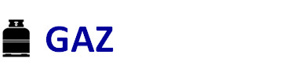
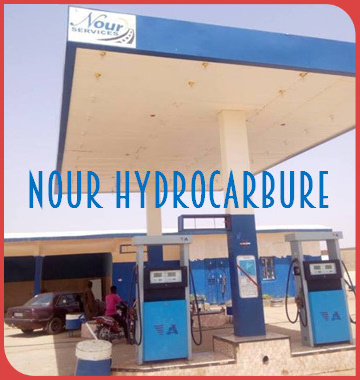
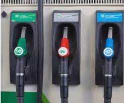
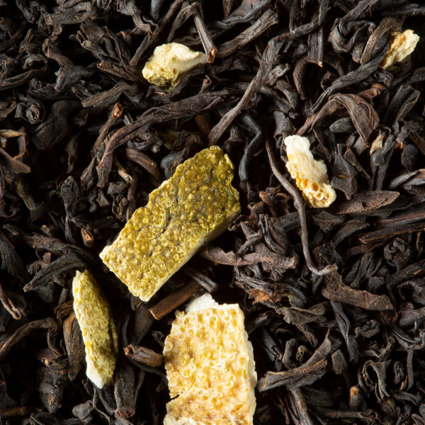

NOUR BTP ET FORAGE est une des leaders entreprise
au Mali réputée par la qualité de ses réalisations dans les
domaines des Bâtiments, Travaux Publics et Particuliers et
des Forages. Nous mettons à votre disposition notre expertise
pour votre entière satisfaction. La filiale BTP et Forage de NOUR
n'est pas seulement une entreprise, mais une véritable partenaire
pour ses clients.
Bâtiments Civils,
-Bâtiments Industriels,
-Bâtiments Administratifs,
-Bâtiments Commerciaux,
-Infrastructure Urbaines,
-Équipements publics,
-Ouvrages Hydrauliques,
-Ponts,
-Chaussées
-Forage d'Eau
-Forage Minier
-Forage Géothermique
-Forage Sonique
-Forage Directionnel
-Forage de Pieux
NOS MOYENS MATERIELS ET RÉALISATIONS
La filiale NOUR HYDROCARBURES est
spécialisée dans l’importation, la distribution
et la commercialisation des produits hydrocarbures
tels que l’Essence, le Gaz-oil et le Gaz à travers ses
Stations Services implantées principalement dans la
Région de Gao. Les produits des Stations NOUR sont
certifiés ISO 9001:2015 apportant à vos engins une
performance incomparable.
NOS PRODUITS
-Super Sans Plomb
-Gaz-oil
-Pétrole lampant
-Lubrifiant pour moteur diesel
-Lubrifiant pour moteur à essence
-Huile minérale

-Gaz Butane 6 kg
-Gaz Butane 12,5 kg
-Gaz Butane 24 kg
-Gaz Butane 32 kg
NOS STATIONS SERVICES


NOUR COMMERCE GÉNÉRALE
est spécialisée dans l'importation,
l'exportation et la Vente générale
d'articles dans le domaine de l'alimentation,
les engins de toutes sortes et pleins d'autres
produits. Elle est le distributeur du thé vert de
chine de la marque ANTILOPE.
Nous commercialisons divers articles entre autre:
-Thé vert ENTILOPE
-Les Véhicules de tout genre
-Les motos de tout genre
-Les produits alimentaires
-Les matériels de construction
NOS PRODUITS PHARES



.jpg)